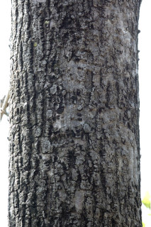
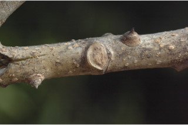
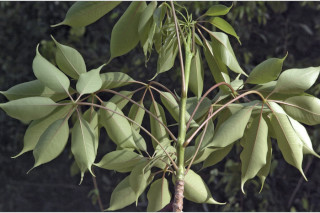
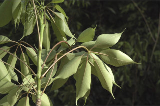
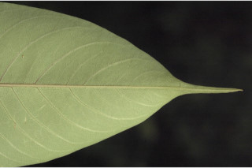
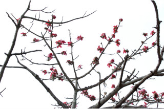
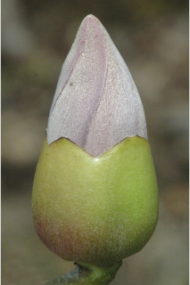

Vernacular names:
ಕನ್ನಡದ ಪ್ರಾದೇಶಿಕ ಹೆಸರು:
Vernacular names:
தமிழ் பெயர்:
Tamil: Elava maram, Ilavu maram, Moul elavou, Mull ilavu, Pulai, Purani, Malai elavam.
Malayalam: Ellavu, Illavu, Mullilavu, Poola.
Kannada: Burga, Pula, Booragada mara, Kemphuburuga, Proparte.
English: Malabar semul, Red cotton tree, Silk cotton.
ಬೂರುಗ, ಕೆಂಪುಬೂರುಗ, ಮರಹತ್ತಿ.
Malayalam: എലവ്, ഇലവ്, മുളളിലവ്, പൂള.
இலவமரம், இலவுமரம், முள் இலவு, புளை, பூரணி, மலை இலவம்.
Images













Swipe to see more >>
Botanical descriptions:
ಸಸ್ಯದ ವೈಜ್ಞಾನಿಕ ವಿವರ:
Botanical descriptions:
மரங்களின் பண்புகள்:
Habit:
ಪ್ರಕೃತಿ :
Habit:
வளரியல்பு:
Large deciduous trees, buttressed, up to 40 m tall.
40ಮೀ ಎತ್ತರದವರೆಗೆ ಬೆಳೆಯುವ ಆನಿಕೆಗಳನ್ನೊಳಗೊಂಡ, ಎಲೆಯುದುರು ಮಾದರಿಯ ಬೃಹತ್ ಮರಗಳು.
40 മീറ്റര് വരെ ഉയരത്തില് വളരുന്നു, വപ്രമൂലത്തോട്കൂടിയ, ഇല പൊഴിക്കുന്ന വന് മരങ്ങള്.
பெரிய இலையுதிர் மரம், தாங்கு வேர் (பட்ரஸ்டு) உடையது, 40 மீ. உயரம் வரை வளரக்கூடியது.
Trunk & Bark:
ಕಾಂಡ ಮತ್ತು ತೊಗಟೆ:
Trunk & Bark:
தண்டு மற்றும் மரப்பட்டை:
Bark grey covered with caducous conical prickles, flaky.
ತೊಗಟೆ ಬೂದು ಬಣ್ಣ ಹೊಂದಿದ್ದು, ಉದುರಿಹೋಗುವ ಶಂಖುವಿನಾಕಾರದ ಮುಳ್ಳುಗಳ-ನ್ನೊಳಗೊಂಡು ಚಕ್ಕೆಯುಕ್ತವಾಗಿರುತ್ತದೆ.
കോണാകൃതിയിലുളളതും, കൊഴിഞ്ഞ് പോകുന്നതുമായ, മുള്ളുകള് നിറഞ്ഞ പുറംതൊലിക്ക് ചാരനിറം, അടര്ന്ന് പോകുന്നതാണ്.
மரத்தின் பட்டை சாம்பல் நிறமானது, எளிதில் உதிரக்கூடிய முட்களுடையது (ப்ரிக்கிள்), சிறு செதில்களாக உதிரக்கூடியது.
Branches and Branchlets:
ಕವಲುಗಳು ಮತ್ತು ಕಿರುಕೊಂಬೆಗಳು:
Branches and Branchlets:
கிளைகள் & சிறிய நுனிக்கிளைகள்:
Branches horizontal, branchlets clustered spirally at nodes, terete, armed.
ಕವಲುಗಳು ಅಡ್ಡವಾಗಿದ್ದು, ಕಿರುಕೊಂಬೆಗಳು ದುಂಡಾಗಿದ್ದು ಮುಳ್ಳುಗಳ ಸಮೇತವಿದ್ದು, ಗಿಣ್ಣುಗಳ ಜಾಗದಲ್ಲಿ ಸುತ್ತುಮಾದರಿಯಲ್ಲಿ ಗುಂಪಾಗಿರುತ್ತವೆ.
ശാഖകള് തിരശ്ചീനമായി വളരുന്നതാണ്, ഉപശാഖകള് ഉരുതും, മുളളുകളുളളതും, കക്ഷങ്ങളില് സര്പ്പിളാകൃതിയില് കൂട്ടമായി ഉാകുന്നതുമാണ്.
கிளைகள், நிலத்திற்கு கிடைமட்டமானது; சிறிய நுனிக்கிளைகள் கணுவில் நெருக்கமாக சுழலில் அமைந்தவை, குறுக்குவெட்டுத் தோற்றத்தில் வளையமானது, எளிதில் உதிரக்கூடிய முட்களுடையது.
Leaves:
ಜಿನುಗು ದ್ರವ:
Leaves:
இலைகள்:
Leaves compound, digitate, clustered at twig ends; stipules lanceolate, caducous; petiole 12-30 cm long, terete, glabrous; leaflets 3-8, lamina (4-) 8-16 x (1.5-) 3-7 cm, narrow elliptic to oblanceolate, apex caudate to acuminate, base cuneate to acute, margin entire, glabrous, chartaceous; midrib slightly raised above; secondary_nerves ca. 14 pairs; tertiary_nerves reticulate.
ഹസ്താകാര ബഹുപത്രങ്ങള്, തുകളുടെ അകത്തായി കൂട്ടമായി ക്രമീകരിച്ചിരിക്കുന്നു; അനുപത്രങ്ങള്ക്ക്, കുന്താകാരം, കൊഴിഞ്ഞ് വീഴുന്നതാണ്; ഞെട്ടുകള്ക്ക് 12 സെ. മീ മുതല് 30 സെ.മീ വരെ നീളം, ഉരുതും, അരോമിലവുമാണ്; പത്രകങ്ങള് 3 മുതല് 8 വരെ, പത്രകഫലകത്തിന് (4 സെ.മീ) 8 സെ.മീ മുതല് 16 സെ.മീ വരെ നീളവും (1.5 സെ. മീ) 3 സെ. മീ മുതല് 7 സെ. മീ വരെ വീതിയും, വീതികുറഞ്ഞ ദീര്ഘവൃത്താകാരം മുതല് അപകുന്താകാരം വരെ; പത്രാഗ്രം നീ വാലോട് കൂടിയതോ ചെറുവാലോട് കൂടിയതോ, ആണ്; പത്രാധാരം ആപ്പാകൃതിയിലോ കൂര്ത്തതോ ആണ്, അവിഭജിതം, അരോമിലം, കടലാസ്പോലത്തെ പ്രകൃതം; മുഖ്യസിര മുകളില് ചെറുതായി ഉയര്ന്നതാണ്; ദ്വീതീയ ഞരമ്പുകള് ഏതാ് 14 ജോഡികള്; ജാലിക തീര്ക്കുന്ന ത്രിതീയ ഞരമ്പുകള്.
இலைகள் கூட்டிலைகள், கைவடிவகூட்டிலைகள், நுனிக்கிளையில் இலைகள் கூட்டமாக மற்றும் நெருக்கமாகமைந்தவை; இலையடிச்செதில் ஈட்டி வடிவானது, உதிரக்கூடியவை; இலையின் காம்பு 12-30 செ.மீ. நீளமானது; குறுக்குவெட்டுத் தோற்றத்தில் வளையமானது, உரோமங்களற்றது; ஒர் கூட்டிலையில் 3-8 ஜோடி சிற்றிலைகளுடையது; சிற்றிலையின் அலகு (4-) 8-16 X (1.5-) 3-7 செ.மீ., நீள்வட்ட வடிவம் முதல் தலைகீழ் ஈட்டி வடிவானது, அலகின் நுனி கூரியது முதல் அதிக்கூரியது, அலகின் தளம் ஆப்பு முதல் கூரியது, அலகின் விளிம்பு முழுமையானது, கீழ்பரப்பு உரோமங்களற்றது, சார்ட்டேசியஸ்; மையநரம்பு அலகின் மேற்பரப்பைவிட மேலெழும்பியது; இரண்டாம் நிலை நரம்புகள் 14 ஜோடிகள்; மூன்றாம் நிலை நரம்புகள் வலைப்பின்னல் போன்றது.
Inflorescence / Flower:
ಎಲೆಗಳು:
Inflorescence / Flower:
மஞ்சரி / மலர்கள்:
Flowers solitary or in fascicles, usually on leafless branches, dark red.
ಎಲೆಗಳು ಹಸ್ತರೂಪಿ ಸಂಯುಕ್ತ ಮಾದರಿಯಲ್ಲಿದ್ದು ಕುಡಿಕೊಂಬೆಗಳ ತುದಿಯಲ್ಲಿ ಗುಂಪಾಗಿದ್ದು ಉದುರಿಹೋಗುವ, ಭರ್ಜಿಯಾಕಾರದ ಕಾವಿನೆಲೆಗಳನ್ನೊಳಗೊಂಡಿರುತ್ತವೆ. ತೊಟ್ಟು 12ರಿಂದ 3ಸೆಂ.ಮೀ. ಉದ್ದವಿದ್ದು, ದುಂಡಾಗಿದ್ದು ರೋಮರಹಿತಗೊಂಡಿರುತ್ತವೆ; ಕಿರುಎಲೆಗಳು 3 ರಿಂದ 8, ಪತ್ರಗಳು (4-)8-16 x (1.5-)3-7ಸೆಂ.ಮೀ. ಗಾತ್ರವಿದ್ದು ಇಕ್ಕಟ್ಟಾದ ಅಂಡವೃತ್ತಾಕೃತಿಯಿಂದ ಬುಗುರಿ-ಈಟಿ ಸಮ್ಮಿಶ್ರಾಕಾರದವರೆಗಿನ ಆಕಾರ ಹೊಂದಿದ್ದು, ಬಾಲರೂಪಿಯಿಂದ ಹಿಡಿದು ಕ್ರಮೇಣ ಚೂಪಾಗುವ ತುದಿ, ಬೆಣೆಯಾಕಾರದಿಂದ ಹಿಡಿದು ಚೂಪಾಗುವ ಬುಡ, ನಯವಾದ ಅಂಚು, ಕಾಗದವನ್ನೋಲುವ ಹಾಗೂ ರೋಮರಹಿತ-ವಾದ ಮೇಲ್ಮೈ ಹೊಂದಿರುತ್ತವೆ; ಮಧ್ಯನಾಳ ಪತ್ರದ ಮೇಲ್ಭಾಗದಲ್ಲಿ ಕೊಂಚ ಉಬ್ಬಿರುತ್ತದೆ; ಎರಡನೇ ದರ್ಜೆಯ ನಾಳಗಳು ಸುಮಾರು 14 ಜೋಡಿಗಳಿರುತ್ತವೆ; ಮೂರನೇ ದರ್ಜೆಯ ನಾಳಗಳು ಜಾಲಬಂಧ ನಾಳಸ್ವರೂಪದವು.
പൂക്കള് ഒറ്റക്കോ ഫാസിക്കിളുകളായോ, മിക്കവാറും ഇലയില്ലാത്ത തുകളില് ഉാകുന്നു, കടുംചുവപ്പു നിറം.
மலர்கள் தனித்தவை அல்லது ஒர் தொகுப்பானது, பொதுவாக இலைகளற்ற கிளைகளில் காணப்படுபவை, சிவப்பானது.
Fruit and Seed:
ಪುಷ್ಪಮಂಜರಿ/ಹೂಗಳು:
Fruit and Seed:
கனி / விதை:
Capsule woody, 5-valved, densely wooly within; seeds many.
ಹೂಗಳು ಸಾಮಾನ್ಯವಾಗಿ ಎಲೆಯಿಲ್ಲದ ಕವಲುಗಳ ಮೇಲೆ ಒಂಟಯಾಗಿ ಅಥವಾ ಗುಚ್ಛಾಕಾರ-ದಲ್ಲಿರುತ್ತವೆ ಹಾಗೂ ಕಡುಕೆಂಪು ಬಣ್ಣವನ್ನು ಹೊಂದಿರುತ್ತವೆ.
5 ഭാഗങ്ങളുളള മരംപോലെ, കടുപ്പമാര്ന്ന കായ്ക്കകം നിറയെ, കമ്പിളിരോമങ്ങള് പോലുളള രോമങ്ങളാല് കനത്ത രോമാവൃതമാണ്; ധാരാളം വിത്തുകള്.
வெடிக்கனி (கேப்சூல்), தடித்தவை 5-அறைகளுடையது, வெள்ளை நிறமான அடர்த்தியான பஞ்சு கொண்டது; விதைகள் எண்ணற்றது.
Literatures:
:
Literatures:
சான்று ஏடு:
Linnaeus, Sp. Pl. 511. 1753; Gamble, Fl. Madras 1: 99. 1997 (re. ed); Sasidharan, Biodiversity documentation for Kerala- Flowering Plants, part 6: 55. 2004; Saldanha, Fl. Karnataka 1: 239. 1996; Keshava Murthy and Yoganarasimhan, Fl. Coorg (Kodagu) 73. 1990; Cook, Fl. Bombay 2. 120. 1902.
Linnaeus, Sp. Pl. 511. 1753; Gamble, Fl. Madras 1: 99. 1997 (re. ed); Sasidharan, Biodiversity documentation for Kerala- Flowering Plants, part 6: 55. 2004; Saldanha, Fl. Karnataka 1: 239. 1996; Keshava Murthy and Yoganarasimhan, Fl. Coorg (Kodagu) 73. 1990; Cook, Fl. Bombay 2. 120. 1902.
Linnaeus, Sp. Pl. 511. 1753; Gamble, Fl. Madras 1: 99. 1997 (re. ed); Sasidharan, Biodiversity documentation for Kerala- Flowering Plants, part 6: 55. 2004; Saldanha, Fl. Karnataka 1: 239. 1996; Keshava Murthy and Yoganarasimhan, Fl. Coorg (Kodagu) 73. 1990; Cook, Fl. Bombay 2. 120. 1902.